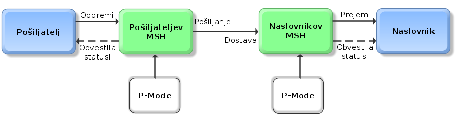
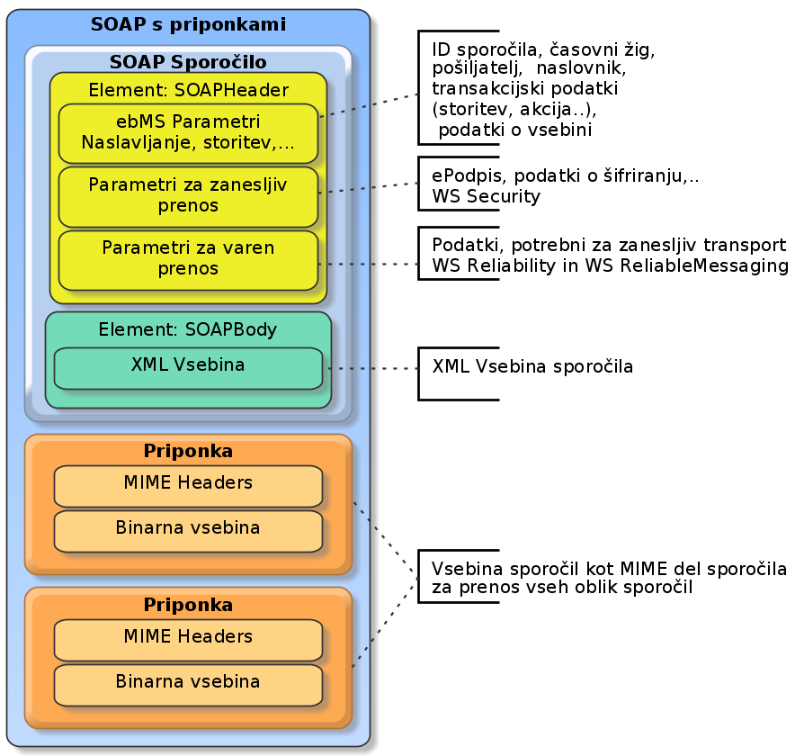

<div class="main">
<article class='content'>
    <h1>ebMS 3.0</h1>
    <h4>Jože Rihtaršič, 12.2.2016</h4><br/>

    Standard ebMS 3.0 (ebXML Messaging Service) izhaja iz družine standardov ebXML 
    (Electronic Business using eXtensible Markup Language), ki jih razvija organizacija OASIS
    (Organization for the Advancement of Structured Information Standards) v sodelovanju
    z organizacijo UN/CEFACT z namenom zagotovitve moderne, na XML temelječe odprte infrastrukture,
    ki bi omogočila globalno elektronsko poslovanje na interoperabilen, varen in konsistenten način.
    Mednarodna organizacija za standardizacijo (angl. International Organization for Standardization, v nadaljevanju ISO) 
    je standard sprejela kot ISO 15000 standard, ki je sestavljen iz petih sklopov:
    <ul>
        <li>ISO 15000-1: ebXML Collaborative Partner Profile Agreement,</li>
        <li>ISO 15000-2: ebXML Messaging Service Specification,</li>
        <li>ISO 15000-3: ebXML Registry Information Model,</li>
        <li>ISO 15000-4: ebXML Registry Services Specification in</li>
        <li>ISO 15000-5: ebXML Core Components Technical Specification, Version 2.01.</li>
    </ul> 
    
    <br />
    Standard ebMS 3.0 predpisuje komunikacijsko nevtralen mehanizem, ki temelji na SOAP sporočilih 
    in rešuje tehnična vprašanja glede naslavljanja, varnosti, zanesljivosti prenosa, preverjanja
    avtentičnosti sporočil itd. Osnovni koncept komunikacije oziroma vročanja temelji na implementaciji
    transportnega modula, t. im. »Messaging Service Handler« (v nadaljevanju MSH). Par MSH modulov izvaja 
    transport sporočil med prejemnikom in naslovnikom na varen in zanesljiv način. 
    Kako pošiljateljev oziroma naslovnikov informacijski sistem komunicira z MSH modulom, pa standard prepušča 
    posameznim implementacijam teh modulov. 
    <br /><br />
    <h1>Parametri za določanje prenosa</h1>
    Standard predpisuje nabor parametrov, to so t. im. P-Mode parametri (angl. Processing Mode), s katerimi lahko
    določamo nivo in parametre varnosti in zanesljivosti transporta med MSH moduli, ter način naslavljanja in preverjanja
    tipov priponk v sporočilu. Parametri omogočajo izdelavo univerzalnega MSH modula za izdelavo novih integracij in poslovnih
    koreografij izmenjave sporočil brez poseganja v programsko kodo MSH modula. Parametri P-Mode so razporejeni v šest 
    vsebinsko povezanih kategorij:
    <ul>
        <li><b>splošni parametri</b>, kot so enolična oznaka konfiguracije, referenca na pogodbo za izmenjavo dokumentov, identifikator naslovnika/prejemnika sporočila ter vloge pri izmenjavi dokumentov; </li>
        <li><b>protokol:</b> določa spodaj ležeči protokol izmenjave (HTTP, SMTP, FTP) ter naslov (URL ali email) prejemnikovega MSH;</li>
        <li><b>poslovni kontekst:</b> določa namen, storitev, akcijo in obliko vsebine;</li>
        <li><b>napake:</b> razdelek določa ravnanje in poročanje v primeru napak pri prenosu;</li>
        <li><b>zanesljivost prenosa:</b> parametri določajo uporabo mehanizmov za zagotavljanje zanesljivosti prenosa;</li>
        <li><b>varnost:</b> parametri določajo nivo varnosti, pravila in certifikate za enkripcijo in podpisovanje sporočil.</li>
    </ul>

    ebMS 3.0 protokol loči dva tipa sporočil (OASIS, 2007b):
    <ul>
        <li><b>ebMS uporabniška sporočila</b> so sporočila, ki prenašajo vsebino med pošiljateljem in prejemnikom;</li>
        <li><b>ebMS signalna sporočila</b>  za komunikacijo med MSH moduli so namenjena proženju prenosa uporabniških sporočil, sporočanju napak ali sporočanju potrdila o sprejemu pošiljke v naslovnikov IS in niso del vsebine, ki se prenaša.</li>

    </ul>   
    <h1>Vzorci prenosa</h1>
    Standard predpisuje tudi vzorce prenosa sporočil (angl. Message Exchange Pattern, v nadaljevanju MEP): 
    One-Way/Push, One-Way/Pull, Two-Way/Sync … Izbira vzorca prenosa je del konfiguracije med pošiljateljevim in 
    naslovnikovim MSH modulom in je odvisen od spodaj ležeče tehnologije (SMTP, HTTP, FTP,.. ). 
    <br />
    <ul>
        <li>Enosmerna komunikacija (angl. One-Way) pomeni, da se uporabniška sporočila prenašajo samo v eno smer. </li>
        <li>Dvosmerna (angl. Two-Way) izmenjava pomeni, da naslovnik odgovori z drugim uporabniškim sporočilom. </li>
    </ul>
    Prvo uporabniško sporočilo se imenuje poizvedba (angl. request), drugo sporočilo pa je označeno kot odgovor
    (angl. reply). Vzorec prenosa določa tudi, kako se prenos začne. V primeru potisni (angl. push) pošiljateljev
    MSH ob prejemu pošiljke v vročanje le-to posreduje v naslovnikov MSH. V primeru izvleci (angl. pull) naslovnikov
    MSH s signalnim sporočilom sporoči pošiljateljevemu MSH-ju, da je pripravljen sprejeti sporočilo. 
    Pošiljateljev MSH nato sporočilo dostavi v naslovnikov MSH. Takšno prevzemanje sporočil je primerno za
    pošiljanje sporočil na naslovnikov MSH, ki ni vedno dosegljiv ali nima statičnega naslova, kot je na primer 
    pošiljanje sporočil na mobilne naprave. Ravno tako omogoča elektronsko komunikacijo z manjšimi podjetji,
    ki nimajo lastnih spletnih strežnikov. 

    <h1>Sestavljanje (pakiranje) sporočila</h1>
    
    ebMS sporočilo temelji na SOAP sporočilih in je sestavljeno iz več elementov:
    <ul><li><b>ovojnica (angl. Envelope)</b> je korenski element in združuje ostale elemente;</li>
<li><b>glava (angl. Header)</b> je opcijski element, namenjen informacijam za kontrolo in procesiranje sporočila (overjanje – avtentikacija, usmerjanje...). Podelementi znotraj tega elementa se imenujejo zaglavni bloki (angl. Header Blocks);</li>
<li><b>telo (angl. Body)</b> vsebuje sporočila (podatke), ki se pošiljajo od pošiljateljevega IS do naslovnikovega IS;</li>
<li><b>napaka (angl. Fault):</b> napaka, do katere pride pri sprejemu, se zapiše v ta element. 
</ul>
Vzorec sporočila SOAP je v splošnem naslednji:


<pre ><code>
&lt;env:Envelope xmlns:env="http://www.w3.org/2003/05/soap-envelope"&gt;
	&lt;env:Header>&lt;!-- opcijski element --&gt;
		&lt;!-- zaglavni bloki --&gt;
	&lt;/env:Header&gt;
	&lt;env:Body&gt;
		&lt;!-- vsebina sporocila ali element &lt;Fault&gt; --&gt;
	&lt;/env:Body&gt;
&lt;/env:Envelope&gt;
</code></pre>


<br />
    ebMS 3.0 omogoča uporabo SOAP sporočil s priponkami oziroma protokola večdelnega MIME sporočila za spletne storitve.
    Namen večdelnega MIME sporočila je oblikovanje (pakiranje) sporočila na podoben način, kot se to izvaja pri navadni 
    elektronski pošti. Prednost takšnega transporta pri spletnih storitvah je prenos vseh oblik (binarnih in tekstovnih) 
    datotek brez dodatnega kodiranja v base64 ali HEX-a format, s katerim si pomagamo pri transportu binarnih vsebin v
    XML strukturah. SOAP sporočilo s priponkami je tako sestavljeno iz XML SOAP sporočila in opcijskih MIME priponk. 

    <br /><br />
    ebMS 3.0 predpisuje tri tipe zaglavnih blokov:
    <ul>
        <li>blok, ki vsebuje ebMS 3.0 infoset podatkov;</li> 
        <li>blok, ki zagotavlja varnost prenosa in lahko vsebuje zgostitvene vrednosti vsebine sporočil, elektronske podpise sporočil, reference na kriptirne ključe itd.;</li> 
        <li>blok, ki vsebuje podatke za zagotavljanje zanesljivosti prenosa.</li> 
    </ul>
    Standard ebMS 3.0 določa XML infoset podatkov (ebMS podatki) v zaglavnem bloku, ki je sestavljen iz petih sklopov: 
     oznaka sporočila, identifikacijski podatki pošiljatelja in prejemnika, poslovni kontekst sporočil, metapodatki o dokumentih
     v sporočilu in dodatni podatki kot pomoč pri procesiranju sporočila na strani prejemnika. 
    <br />
    <br />

    Oznaka sporočila se zapiše v element MessageInfo in združuje naslednje podatke: enolični identifikator sporočila, čas nastanka
    sporočila in opcijsko referenco na prehodno izmenjano uporabniško sporočilo. Referenca se uporablja v
    dvosmerni izmenjavi uporabniških sporočil, kadar se na prvo sporočilo pričakuje naslovnikov odgovor.
<br /><br />

    Pošiljatelj in naslovnik se zapišeta v element PartyInfo (prevod: podatki o strankah), ki je sestavljen iz podelementov 
    „To“ (prevod: Za) in „From“ (prevod: Od). Stranka je identificirana v najmanj enem elementu „PartyId“, 
    ki enolično določa pošiljatelja in prejemnika sporočila. Enolična oznaka stranke je sestavljena iz tipa identifikatorja (angl. Type) 
    in enolične oznake stranke. V primeru, da tip identifikatorja ni podan, mora biti vrednost v URI obliki, kot to 
    določa standard (RFC2396). V nasprotnem primeru lahko naslovnikov MSH sporoči napako. Naslovnika tako lahko določa 
    poljubna oznaka (v URI obliki), dogovorjena med prejemnikom in pošiljateljem. Priporoča pa se uporaba obstoječih oznak
    po shemah, ki se že uporabljajo za elektronsko izmenjavo in ki so določene v registrih, kot so EDIRA, EDIFACT ali 
    ANSI ASC X12.
<br /><br />
    Primer naslavljanja z elektronskim naslovom:
    <pre><code>
        &lt;eb:PartyId>mailto:naziv@elektronska.posta.si&lt;/eb:PartyId>
</code></pre>
    Primer naslavljanja s posebnimi identifikatorji:
<pre><code>
    &lt;eb:PartyId type="urn:oasis:names:tc:ebxml-cppa:partyid-type:duns" >123456789&lt;/eb:PartyId>
</code></pre>
 
</article>  
</div>